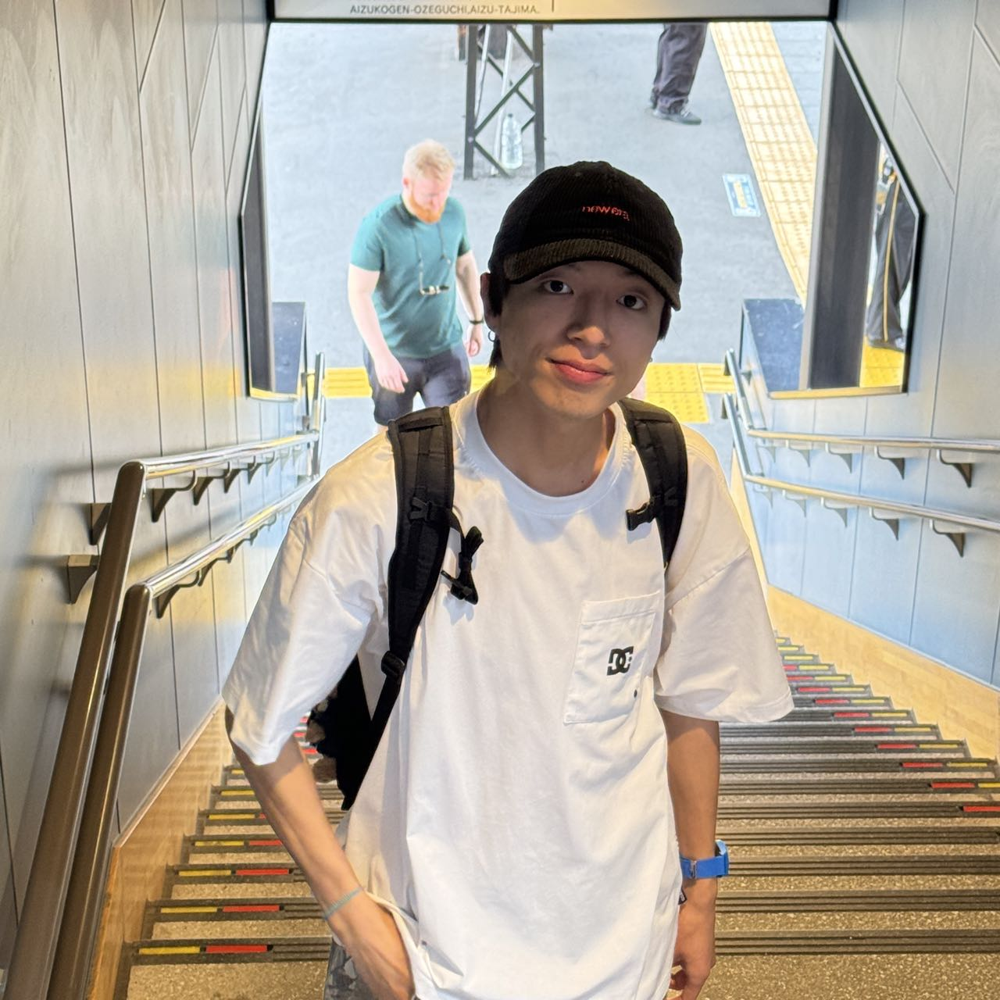

About Me
Japan University of Aizu
I am from Guizhou Province, China. I completed my undergraduate studies in Tianjin, majoring in Digital Media Technology, and I am currently a graduate student at the University of Aizu in Japan, where I belong to the Signal Processing Laboratory. My main research interests are virtual embodied AI and world models. I previously interned at a television station, where I traveled throughout the city conducting interviews and editing news reports. Through this experience, I became very familiar with the workflow of journalism and media production. I can also play a variety of musical instruments, including the piano, violin, saxophone, guitar, and harmonica. I have been learning music since childhood, and I believe that emotion in music is more important than technique itself. Of course, I also love photography. I have traveled to many places across both China and Japan, and wherever I go, I enjoy taking photos to capture the small moments of everyday life. In addition, I enjoy skateboarding. I have experienced injuries of many kinds through skateboarding, but it was through that pain that I managed to accomplish challenges that once seemed impossible. I was also once a skateboarding instructor.
